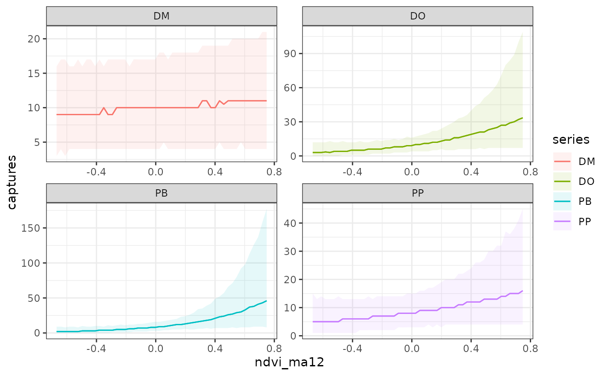
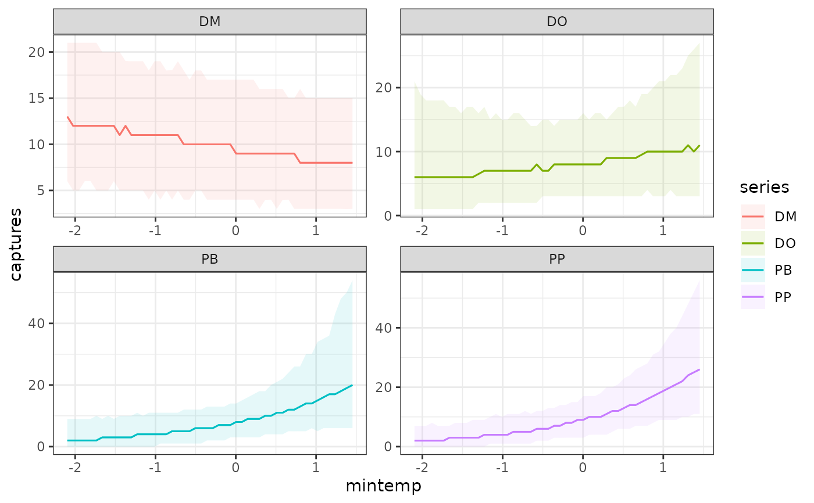
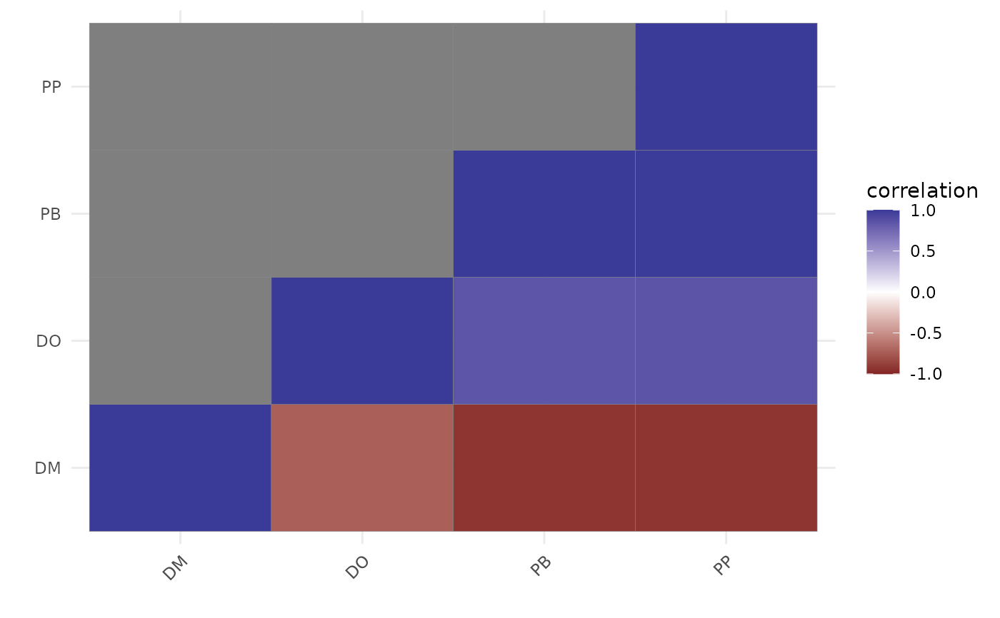
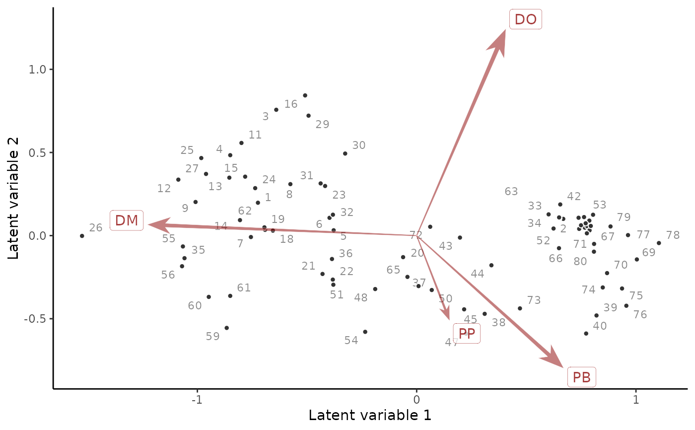
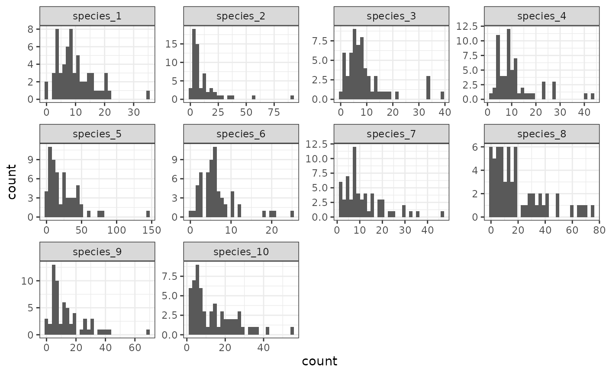
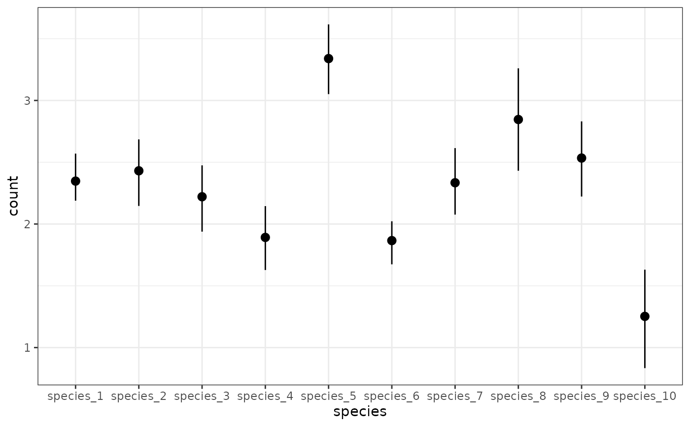
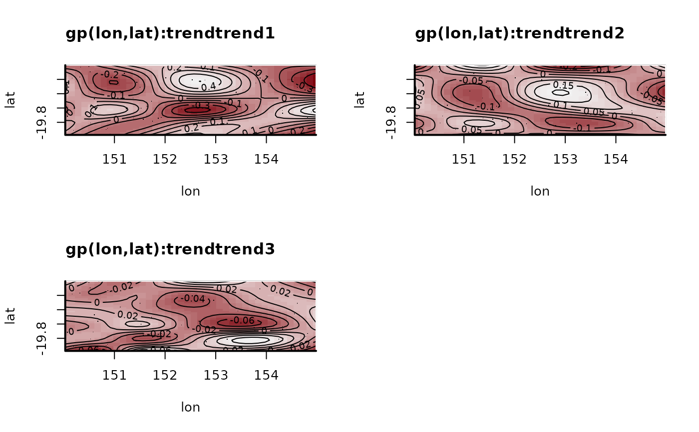

This function sets up a Joint Species Distribution Model whereby the residual associations among species can be modelled in a reduced-rank format using a set of latent factors. The factor specification is extremely flexible, allowing users to include spatial, temporal or any other type of predictor effects to more efficiently capture unmodelled residual associations, while the observation model can also be highly flexible (including all smooth, GP and other effects that mvgam can handle)
Usage
jsdgam(
formula,
factor_formula = ~-1,
knots,
factor_knots,
data,
newdata,
family = poisson(),
unit = time,
species = series,
share_obs_params = FALSE,
priors,
n_lv = 2,
backend = getOption("brms.backend", "cmdstanr"),
algorithm = getOption("brms.algorithm", "sampling"),
control = list(max_treedepth = 10, adapt_delta = 0.8),
chains = 4,
burnin = 500,
samples = 500,
thin = 1,
parallel = TRUE,
threads = 1,
silent = 1,
run_model = TRUE,
return_model_data = FALSE,
residuals = TRUE,
...
)Arguments
- formula
A
formulaobject specifying the GAM observation model formula. These are exactly like the formula for a GLM except that smooth terms,s(),te(),ti(),t2(), as well as time-varyingdynamic()terms, nonparametricgp()terms and offsets usingoffset(), can be added to the right hand side to specify that the linear predictor depends on smooth functions of predictors (or linear functionals of these). Details of the formula syntax used by mvgam can be found inmvgam_formulae- factor_formula
A
formulaobject specifying the linear predictor effects for the latent factors. Useby = trendwithin calls to functional terms (i.e.s(),te(),ti(),t2(),dynamic(), orgp()) to ensure that each factor captures a different axis of variation. See the example below as an illustration- knots
An optional
listcontaining user specified knot values to be used for basis construction. For most bases the user simply supplies the knots to be used, which must match up with thekvalue supplied (note that the number of knots is not always justk). Different terms can use different numbers of knots, unless they share a covariate- factor_knots
An optional
listcontaining user specified knot values to be used for basis construction of any smooth terms infactor_formula. For most bases the user simply supplies the knots to be used, which must match up with thekvalue supplied (note that the number of knots is not always justk). Different terms can use different numbers of knots, unless they share a covariate- data
A
dataframeorlistcontaining the model response variable and covariates required by the GAMformulaandfactor_formulaobjects- newdata
Optional
dataframeorlistof test data containing the same variables as indata. If included, the observations in variableywill be set toNAwhen fitting the model so that posterior simulations can be obtained- family
familyspecifying the observation family for the outcomes. Currently supported families are:gaussian()for real-valued databetar()for proportional data on(0,1)lognormal()for non-negative real-valued datastudent_t()for real-valued dataGamma()for non-negative real-valued databernoulli()for binary datapoisson()for count datanb()for overdispersed count databinomial()for count data with imperfect detection when the number of trials is known; note that thecbind()function must be used to bind the discrete observations and the discrete number of trialsbeta_binomial()as forbinomial()but allows for overdispersion
Default is
poisson(). Seemvgam_familiesfor more details- unit
The unquoted name of the variable that represents the unit of analysis in
dataover which latent residuals should be correlated. This variable should be either anumericorintegervariable in the supplieddata. Defaults totimeto be consistent with other functionalities in mvgam, though note that the data need not be time series in this case. See examples below for further details and explanations- species
The unquoted name of the
factorvariable that indexes the different response units indata(usually'species'in a JSDM). Defaults toseriesto be consistent with othermvgammodels- share_obs_params
logical. IfTRUEand thefamilyhas additional family-specific observation parameters (e.g. variance components instudent_t()orgaussian(), or dispersion parameters innb()orbetar()), these parameters will be shared across all outcome variables. This is handy if you have multiple outcomes (time series in mostmvgammodels) that you believe share some properties, such as being from the same species over different spatial units. Default isFALSE.- priors
An optional
data.framewith prior definitions (in Stan syntax) or, preferentially, a vector containing objects of classbrmsprior(see.priorfor details). See get_mvgam_priors and for more information on changing default prior distributions- n_lv
integerthe number of latent factors to use for modelling residual associations. Cannot be> n_species. Defaults arbitrarily to2- backend
Character string naming the package to use as the backend for fitting the Stan model. Options are "cmdstanr" (the default) or "rstan". Can be set globally for the current R session via the
"brms.backend"option (seeoptions). Details on the rstan and cmdstanr packages are available at https://mc-stan.org/rstan/ and https://mc-stan.org/cmdstanr/, respectively- algorithm
Character string naming the estimation approach to use. Options are
"sampling"for MCMC (the default),"meanfield"for variational inference with factorized normal distributions,"fullrank"for variational inference with a multivariate normal distribution,"laplace"for a Laplace approximation (only available when using cmdstanr as the backend) or"pathfinder"for the pathfinder algorithm (only currently available when using cmdstanr as the backend). Can be set globally for the current R session via the"brms.algorithm"option (seeoptions). Limited testing suggests that"meanfield"performs best out of the non-MCMC approximations for dynamic GAMs, possibly because of the difficulties estimating covariances among the many spline parameters and latent trend parameters. But rigorous testing has not been carried out- control
A named
listfor controlling the sampler's behaviour. Valid elements includemax_treedepth,adapt_deltaandinit- chains
integerspecifying the number of parallel chains for the model. Ignored ifalgorithm %in% c('meanfield', 'fullrank', 'pathfinder', 'laplace')- burnin
integerspecifying the number of warmup iterations of the Markov chain to run to tune sampling algorithms. Ignored ifalgorithm %in% c('meanfield', 'fullrank', 'pathfinder', 'laplace')- samples
integerspecifying the number of post-warmup iterations of the Markov chain to run for sampling the posterior distribution- thin
Thinning interval for monitors. Ignored if
algorithm %in% c('meanfield', 'fullrank', 'pathfinder', 'laplace')- parallel
logicalspecifying whether multiple cores should be used for generating MCMC simulations in parallel. IfTRUE, the number of cores to use will bemin(c(chains, parallel::detectCores() - 1))- threads
integerExperimental option to use multithreading for within-chain parallelisation inStan. We recommend its use only if you are experienced withStan'sreduce_sumfunction and have a slow running model that cannot be sped up by any other means. Currently works for all families when usingCmdstanas the backend- silent
Verbosity level between
0and2. If1(the default), most of the informational messages of compiler and sampler are suppressed. If2, even more messages are suppressed. The actual sampling progress is still printed. Setrefresh = 0to turn this off as well. If usingbackend = "rstan"you can also set open_progress = FALSE to prevent opening additional progress bars.- run_model
logical. IfFALSE, the model is not fitted but instead the function will return the model file and the data / initial values that are needed to fit the model outside ofmvgam- return_model_data
logical. IfTRUE, the list of data that is needed to fit the model is returned, along with the initial values for smooth and AR parameters, once the model is fitted. This will be helpful if users wish to modify the model file to add other stochastic elements that are not currently available inmvgam. Default isFALSEto reduce the size of the returned object, unlessrun_model == FALSE- residuals
Logical indicating whether to compute series-level randomized quantile residuals and include them as part of the returned object. Defaults to
TRUE, but you can set toFALSEto save computational time and reduce the size of the returned object (users can always add residuals to an object of classmvgamusing add_residuals)- ...
Other arguments to pass to mvgam
Value
A list object of class mvgam containing model output,
the text representation of the model file,
the mgcv model output (for easily generating simulations at
unsampled covariate values), Dunn-Smyth residuals for each species and key information needed
for other functions in the package. See mvgam-class for details.
Use methods(class = "mvgam") for an overview on available methods
Details
Joint Species Distribution Models allow for responses of multiple species to be
learned hierarchically, whereby responses to environmental variables in formula can be partially
pooled and any latent, unmodelled residual associations can also be learned. In mvgam, both of
these effects can be modelled with the full power of latent factor Hierarchical GAMs, providing unmatched
flexibility to model full communities of species. When calling jsdgam, an initial State-Space model using
trend = 'None' is set up and then modified to include the latent factors and their linear predictors.
Consequently, you can inspect priors for these models using get_mvgam_priors by supplying the relevant
formula, factor_formula, data and family arguments and keeping the default trend = 'None'.
In a JSDGAM, the expectation of response \(Y_{ij}\) is modelled with
$$g(\mu_{ij}) = X_i\beta + u_i\theta_j,$$
where \(g(.)\) is a known link function,
\(X\) is a design matrix of linear predictors (with associated \(\beta\) coefficients),
\(u\) are \(n_{lv}\)-variate latent factors
(\(n_{lv}\)<<\(n_{species}\)) and
\(\theta_j\) are species-specific loadings on the latent factors, respectively. The design matrix
\(X\) and \(\beta\) coefficients are constructed and modelled using formula and can contain
any of mvgam's predictor effects, including random intercepts and slopes, multidimensional penalized
smooths, GP effects etc... The factor loadings \(\theta_j\) are constrained for identifiability but can
be used to reconstruct an estimate of the species' residual variance-covariance matrix
using \(\Theta \Theta'\) (see the example below and residual_cor() for details).
The latent factors are further modelled using:
$$
u_i \sim \text{Normal}(Q_i\beta_{factor}, 1) \quad
$$
where the second design matrix \(Q\) and associated \(\beta_{factor}\) coefficients are
constructed and modelled using factor_formula. Again, the effects that make up this linear
predictor can contain any of mvgam's allowed predictor effects, providing enormous flexibility for
modelling species' communities.
References
Nicholas J Clark & Konstans Wells (2023). Dynamic generalised additive models (DGAMs) for forecasting discrete ecological time series.
Methods in Ecology and Evolution. 14:3, 771-784.
David I Warton, F Guillaume Blanchet, Robert B O’Hara, Otso Ovaskainen, Sara Taskinen, Steven C
Walker & Francis KC Hui (2015). So many variables: joint modeling in community ecology.
Trends in Ecology & Evolution 30:12, 766-779.
Examples
# \donttest{
# Simulate latent count data for 500 spatial locations and 10 species
set.seed(0)
N_points <- 500
N_species <- 10
# Species-level intercepts (on the log scale)
alphas <- runif(N_species, 2, 2.25)
# Simulate a covariate and species-level responses to it
temperature <- rnorm(N_points)
betas <- runif(N_species, -0.5, 0.5)
# Simulate points uniformly over a space
lon <- runif(N_points, min = 150, max = 155)
lat <- runif(N_points, min = -20, max = -19)
# Set up spatial basis functions as a tensor product of lat and lon
sm <- mgcv::smoothCon(mgcv::te(lon, lat, k = 5),
data = data.frame(lon, lat),
knots = NULL)[[1]]
# The design matrix for this smooth is in the 'X' slot
des_mat <- sm$X
dim(des_mat)
#> [1] 500 25
# Function to generate a random covariance matrix where all variables
# have unit variance (i.e. diagonals are all 1)
random_Sigma = function(N){
L_Omega <- matrix(0, N, N);
L_Omega[1, 1] <- 1;
for (i in 2 : N) {
bound <- 1;
for (j in 1 : (i - 1)) {
L_Omega[i, j] <- runif(1, -sqrt(bound), sqrt(bound));
bound <- bound - L_Omega[i, j] ^ 2;
}
L_Omega[i, i] <- sqrt(bound);
}
Sigma <- L_Omega %*% t(L_Omega);
return(Sigma)
}
# Simulate a variance-covariance matrix for the correlations among
# basis coefficients
Sigma <- random_Sigma(N = NCOL(des_mat))
# Now simulate the species-level basis coefficients hierarchically, where
# spatial basis function correlations are a convex sum of a base correlation
# matrix and a species-level correlation matrix
basis_coefs <- matrix(NA, nrow = N_species, ncol = NCOL(Sigma))
base_field <- mgcv::rmvn(1, mu = rep(0, NCOL(Sigma)), V = Sigma)
for(t in 1:N_species){
corOmega <- (cov2cor(Sigma) * 0.7) +
(0.3 * cov2cor(random_Sigma(N = NCOL(des_mat))))
basis_coefs[t, ] <- mgcv::rmvn(1, mu = rep(0, NCOL(Sigma)), V = corOmega)
}
# Simulate the latent spatial processes
st_process <- do.call(rbind, lapply(seq_len(N_species), function(t){
data.frame(lat = lat,
lon = lon,
species = paste0('species_', t),
temperature = temperature,
process = alphas[t] +
betas[t] * temperature +
des_mat %*% basis_coefs[t,])
}))
# Now take noisy observations at some of the points (60)
obs_points <- sample(1:N_points, size = 60, replace = FALSE)
obs_points <- data.frame(lat = lat[obs_points],
lon = lon[obs_points],
site = 1:60)
# Keep only the process data at these points
st_process %>%
dplyr::inner_join(obs_points, by = c('lat', 'lon')) %>%
# now take noisy Poisson observations of the process
dplyr::mutate(count = rpois(NROW(.), lambda = exp(process))) %>%
dplyr::mutate(species = factor(species,
levels = paste0('species_', 1:N_species))) %>%
dplyr::group_by(lat, lon) -> dat
# View the count distributions for each species
library(ggplot2); theme_set(theme_bw())
ggplot(dat, aes(x = count)) +
geom_histogram() +
facet_wrap(~ species, scales = 'free')
#> `stat_bin()` using `bins = 30`. Pick better value with `binwidth`.

ggplot(dat, aes(x = lon, y = lat, col = log(count + 1))) +
geom_point(size = 2.25) +
facet_wrap(~ species, scales = 'free') +
scale_color_viridis_c()

# Inspect default priors for a joint species model with three spatial factors
priors <- get_mvgam_priors(formula = count ~
# Environmental model includes random slopes for
# a linear effect of temperature
s(species, bs = 're', by = temperature),
# Each factor estimates a different nonlinear spatial process, using
# 'by = trend' as in other mvgam State-Space models
factor_formula = ~ gp(lon, lat, k = 6, by = trend) - 1,
n_lv = 3,
# The data and grouping variables
data = dat,
unit = site,
species = species,
# Poisson observations
family = poisson())
head(priors)
#> param_name param_length
#> 1 (Intercept) 1
#> 2 vector[1] mu_raw; 1
#> 3 vector<lower=0>[1] sigma_raw; 1
#> 4 real<lower=0> alpha_gp_trend(lon, lat):trendtrend1; 1
#> 5 real<lower=0> alpha_gp_trend(lon, lat):trendtrend2; 1
#> 6 real<lower=0> alpha_gp_trend(lon, lat):trendtrend3; 1
#> param_info
#> 1 (Intercept)
#> 2 s(species):temperature pop mean
#> 3 s(species):temperature pop sd
#> 4 gp(lon, lat):trendtrend1 marginal deviation
#> 5 gp(lon, lat):trendtrend2 marginal deviation
#> 6 gp(lon, lat):trendtrend3 marginal deviation
#> prior
#> 1 (Intercept) ~ student_t(3, 2.1, 2.5);
#> 2 mu_raw ~ std_normal();
#> 3 sigma_raw ~ inv_gamma(1.418, 0.452);
#> 4 alpha_gp_trend(lon, lat):trendtrend1 ~ student_t(3, 0, 2.5);
#> 5 alpha_gp_trend(lon, lat):trendtrend2 ~ student_t(3, 0, 2.5);
#> 6 alpha_gp_trend(lon, lat):trendtrend3 ~ student_t(3, 0, 2.5);
#> example_change new_lowerbound
#> 1 (Intercept) ~ normal(0, 1); <NA>
#> 2 mu_raw ~ normal(0.65, 0.15); <NA>
#> 3 sigma_raw ~ exponential(0.27); <NA>
#> 4 alpha_gp_trend(lon, lat):trendtrend1 ~ normal(0, 0.86); <NA>
#> 5 alpha_gp_trend(lon, lat):trendtrend2 ~ normal(0, 0.84); <NA>
#> 6 alpha_gp_trend(lon, lat):trendtrend3 ~ normal(0, 0.78); <NA>
#> new_upperbound
#> 1 <NA>
#> 2 <NA>
#> 3 <NA>
#> 4 <NA>
#> 5 <NA>
#> 6 <NA>
# Fit a JSDM that estimates hierarchical temperature responses
# and that uses three latent spatial factors
mod <- jsdgam(formula = count ~
# Environmental model includes random slopes for a
# linear effect of temperature
s(species, bs = 're', by = temperature),
# Each factor estimates a different nonlinear spatial process, using
# 'by = trend' as in other mvgam State-Space models
factor_formula = ~ gp(lon, lat, k = 6, by = trend) - 1,
n_lv = 3,
# Change default priors for fixed random effect variances and
# factor P marginal deviations to standard normal
priors = c(prior(std_normal(),
class = sigma_raw),
prior(std_normal(),
class = `alpha_gp_trend(lon, lat):trendtrend1`),
prior(std_normal(),
class = `alpha_gp_trend(lon, lat):trendtrend2`),
prior(std_normal(),
class = `alpha_gp_trend(lon, lat):trendtrend3`)),
# The data and the grouping variables
data = dat,
unit = site,
species = species,
# Poisson observations
family = poisson(),
chains = 2,
silent = 2)
# Plot species-level intercept estimates
plot_predictions(mod, condition = 'species',
type = 'link')

# Plot species' hierarchical responses to temperature
plot_predictions(mod, condition = c('temperature', 'species', 'species'),
type = 'link')

# Plot posterior median estimates of the latent spatial factors
plot(mod, type = 'smooths', trend_effects = TRUE)

# Or using gratia, if you have it installed
if(requireNamespace('gratia', quietly = TRUE)){
gratia::draw(mod, trend_effects = TRUE, dist = 0)
}
# Plot species' randomized quantile residual distributions
# as a function of latitude
pp_check(mod,
type = 'resid_ribbon_grouped',
group = 'species',
x = 'lat',
ndraws = 200)

# Calculate residual spatial correlations
post_cors <- residual_cor(mod)
names(post_cors)
#> [1] "cor" "cor_lower" "cor_upper" "sig_cor" "cov"
#> [6] "prec" "prec_lower" "prec_upper" "sig_prec" "trace"
# Look at lower and upper credible interval estimates for
# some of the estimated correlations
post_cors$cor[1:5, 1:5]
#> species_1 species_2 species_3 species_4 species_5
#> species_1 1.0000000 0.7291417 0.76027390 0.7978305 -0.22083329
#> species_2 0.7291417 1.0000000 0.19472924 0.4094377 -0.47126350
#> species_3 0.7602739 0.1947292 1.00000000 0.8950572 -0.04920993
#> species_4 0.7978305 0.4094377 0.89505716 1.0000000 -0.44986856
#> species_5 -0.2208333 -0.4712635 -0.04920993 -0.4498686 1.00000000
post_cors$cor_upper[1:5, 1:5]
#> species_1 species_2 species_3 species_4 species_5
#> species_1 1.0000000 0.9218755 0.9575172 0.9586931 0.1808305
#> species_2 0.9218755 1.0000000 0.5643469 0.7418777 -0.1613867
#> species_3 0.9575172 0.5643469 1.0000000 0.9757988 0.2812268
#> species_4 0.9586931 0.7418777 0.9757988 1.0000000 -0.1193160
#> species_5 0.1808305 -0.1613867 0.2812268 -0.1193160 1.0000000
post_cors$cor_lower[1:5, 1:5]
#> species_1 species_2 species_3 species_4 species_5
#> species_1 1.0000000 0.45542531 0.4367321 0.52755016 -0.5661061
#> species_2 0.4554253 1.00000000 -0.1983615 -0.02193048 -0.7169815
#> species_3 0.4367321 -0.19836146 1.0000000 0.74175701 -0.4062964
#> species_4 0.5275502 -0.02193048 0.7417570 1.00000000 -0.7236728
#> species_5 -0.5661061 -0.71698145 -0.4062964 -0.72367280 1.0000000
# Plot of the posterior median correlations for those estimated
# to be non-zero
plot(post_cors)
# Posterior predictive checks and ELPD-LOO can ascertain model fit
pp_check(mod,
type = "pit_ecdf_grouped",
group = "species",
ndraws = 200)

loo(mod)
#> Warning: Some Pareto k diagnostic values are too high. See help('pareto-k-diagnostic') for details.
#>
#> Computed from 1000 by 600 log-likelihood matrix.
#>
#> Estimate SE
#> elpd_loo -4401.5 227.0
#> p_loo 2196.9 187.3
#> looic 8803.1 454.0
#> ------
#> MCSE of elpd_loo is NA.
#> MCSE and ESS estimates assume MCMC draws (r_eff in [0.0, 1.1]).
#>
#> Pareto k diagnostic values:
#> Count Pct. Min. ESS
#> (-Inf, 0.67] (good) 316 52.7% 0
#> (0.67, 1] (bad) 98 16.3% <NA>
#> (1, Inf) (very bad) 186 31.0% <NA>
#> See help('pareto-k-diagnostic') for details.
# Forecast log(counts) for entire region (site value doesn't matter as long
# as each spatial location has a different and unique site identifier);
# note this calculation takes a few minutes because of the need to calculate
# draws from the stochastic latent factors
newdata <- st_process %>%
dplyr::mutate(species = factor(species,
levels = paste0('species_',
1:N_species))) %>%
dplyr::group_by(lat, lon) %>%
dplyr::mutate(site = dplyr::cur_group_id()) %>%
dplyr::ungroup()
preds <- predict(mod, newdata = newdata)
# Plot the median log(count) predictions on a grid
newdata$log_count <- preds[,1]
ggplot(newdata, aes(x = lon, y = lat, col = log_count)) +
geom_point(size = 1.5) +
facet_wrap(~ species, scales = 'free') +
scale_color_viridis_c() +
theme_classic()
 # }
# }